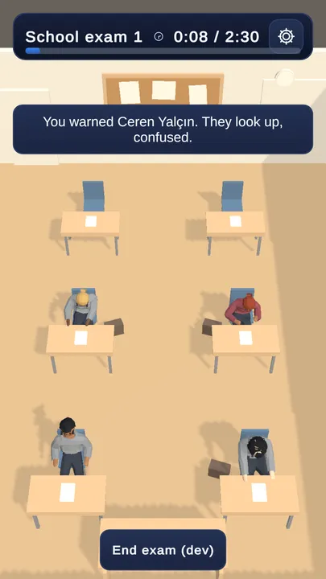

An action lands
Warning, confiscating or removing someone shows one short line under the clock for about 2.6 seconds. It settles in and fades out.
- It says that you acted, never whether you were right. The wording comes from the game's existing feedback text, which deliberately leaves judgement to later consequences.
- Restored, not new. The game already wrote this line after every action, but nothing had drawn it since the old IMGUI HUD was removed. Players only heard a chime.
- It takes no taps, so it never blocks a press meant for a student.